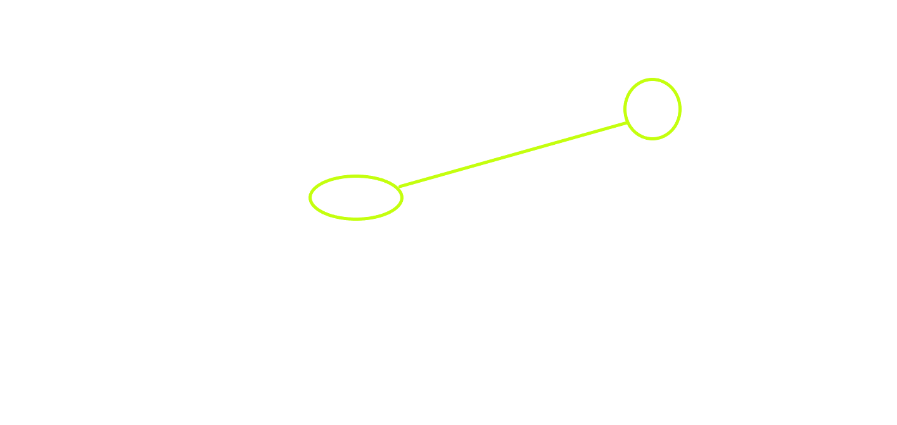

Teoria Grafurilor
Introducere
Scurt istoric al teoriei grafurilor
Problema podurilor din Königsberg
Grafuri în viața reala
Grafuri neorientate
Noţiunea de graf neorientat
Reprezentarea grafurilor neorientate
Noţiunile de graf parţial şi subgraf
Graf complet şi graf bipartit
Noţiunile de lanţ şi ciclu
Grafuri hamiltoniene şi euleriene
Grafuri orientate
Noţiunea de graf orientat
Metode de reprezentare a grafurilor orientate
Conexitate şi tare conexitate
Arbori
